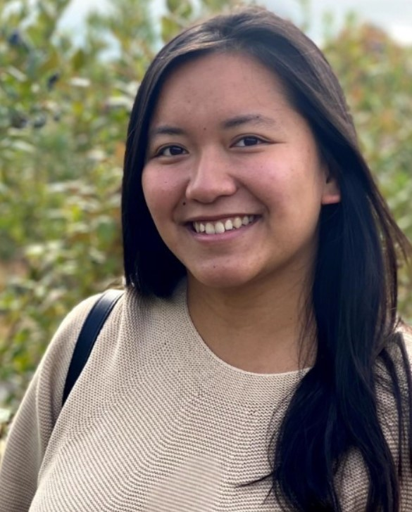

Ana Maharjan, from Lalitpur, Nepal
Went to Lincoln School in Nepal
When and how we met: I met Ana my freshman year Fall 2019 while rushing AKPsi. I was better friends with her boyfriend--now fiance--Chris Lally 1st, but then she and I became closer in the summer of 2020 during COVID. We would all go to Chris’s beach house in Old Lyme Connecticut, and I have the best memories and conversations with Ana there.
Why Ana inspires me: Ana is like an older sister to me. She feels like family because I not only love her unconditionally, but I know she cares and supports me the same way. I like having older mentors and friends like her in my life because they give me unapologetic advice and a unique perspective on the world that I can both relate to and I can also always learn something new. I remember freshman year when school, friends, and jobs felt overwhelming, and Ana told me about the time she survived a deadly earthquake in Nepal, and how her being in that true state of fear and thinking about life or death made her look at life differently. Her life experiences have taught her to only care about the people and things that truly matter; she does not waste her time and energy that don’t. She is a perfect example of someone who fills her life with the things that make her feel whole and happy. I look up to the stability she has created for herself in America, I look up to how hardworking she is, I look up to how talented and smart she is, I look up to how mature she is, I look up to how she puts family first, I look up to how well she handles herself and how she carries herself with grace.
Dec 2022 What is Ana up to: Ana made a documentary about kidney trafficking in highschool which took 3 years to complete. She played volleyball and traveled for tournaments and games. She knew she wanted to leave Nepal for her undergrad education, and she has now built a wonderful life here in America, from Babson to living in Boston. She was a CWEL (Center for Women's Entrepreneurial Leadership) Scholar and Honors Program Scholar, as well as a member of the business fraternity Alpha Kappa Psi. After Babson, Ana worked as a consultant for Dun & Bradstreet, then she got her Masters of Science in Business Analytics at Boston University’s Questrom School of Business. She is now working on a web3 venture with her fiance called Fide.
Hobbies:
- Cooking
- Raising her and Chris's dog named Momo üêï
- Beaches
- Traveling
- Adventuring in the peacful & great outdoors
- Coloring
- Playing overcooked
- Building sim houses
Top 3 memories:
-
Old Lyme - talks under the stars laying on the bech
- Egg Gurls Nights
- Meeting your family
Ana's Dreams: “Lots of nature, great homemade food, family and good friends and lots of dogs living together in harmony.”
ADD PICTURES BELOW